GLICD
Capture de la fenêtre active :
Retour au paragraphe précédent
- Simple clic > La fenêtre active
Délai avant la capture : 10 secondes (simple clic à l'aide des boutons « + » ou « - »)
Simple clic > Capturer le pointeur de la souris
Laisser par défaut : Capturer la bordure de la fenêtre
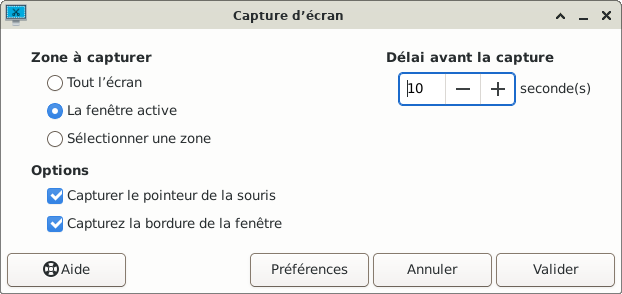
- Exemple : Dans l'application « Parole » prendre la capture d'écran du changement de format de l'image.
Cela implique une action après avoir validé une capture d'écran, et un délai de 10 secondes doit être suffisant.
Ouvrir l'application « Parole » : Simple clic > Applications > Multimédia > Lecteur multimédia Parole
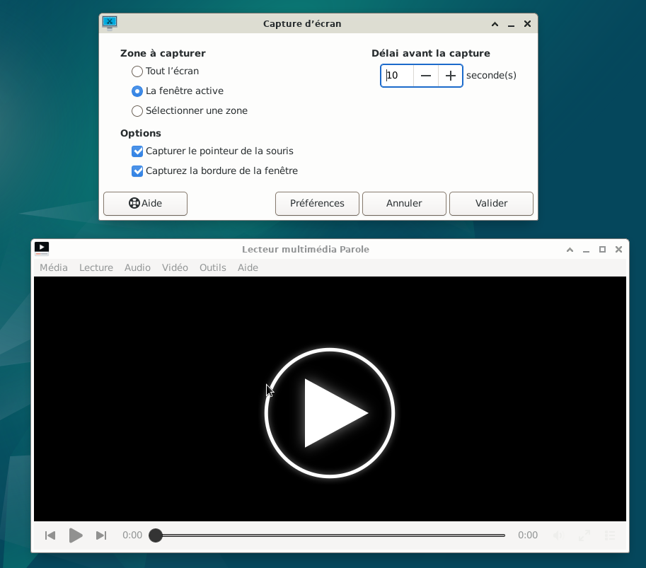
- Simple clic > Valider
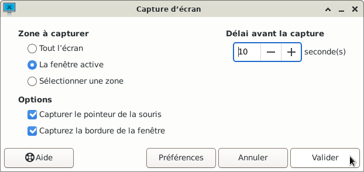
- A partir de ce moment, il reste 10 secondes pour faire les actions nécessaires pour arriver à la capture d'écran désirée. Si besoin, le temps peut être diminué ou augmenté.
- Dans l'application Parole
Simple clic > Vidéo > Format d'image
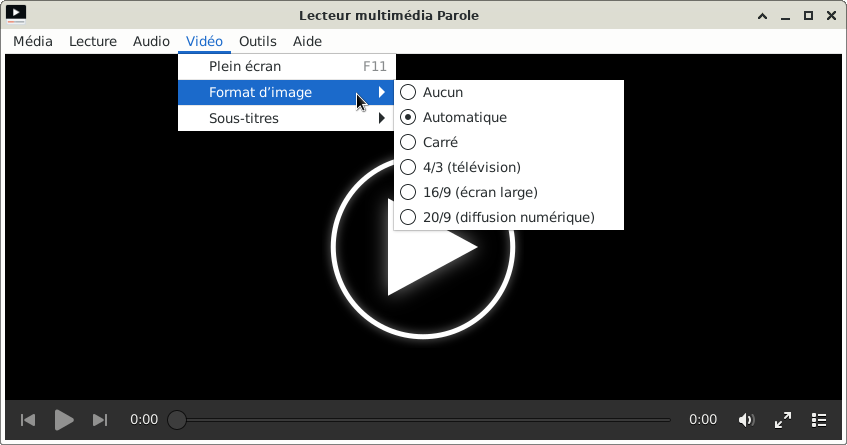
- Attendre que la fenêtre « capture d'écran » apparaisse.
Sous « Aperçu » en miniature la capture d'écran prise.
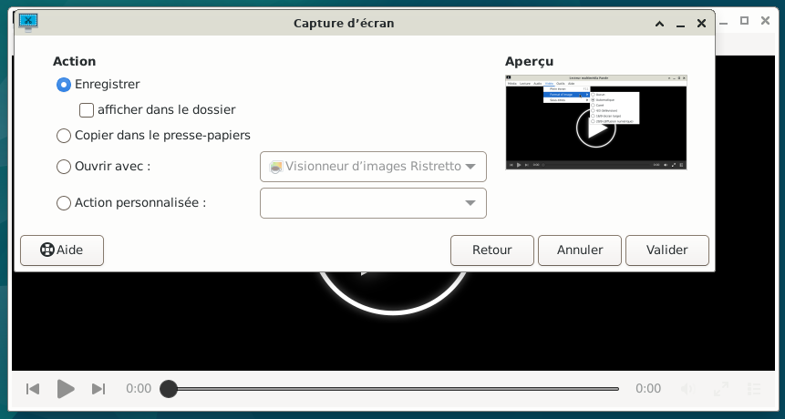
- L'action « Enregistrer » la capture d'écran a été vue dans le paragraphe précédent.
Ici, l'action « Ouvrir avec : » sera utilisée.
Simple clic > Ouvrir avec : (le rond devient bleu)
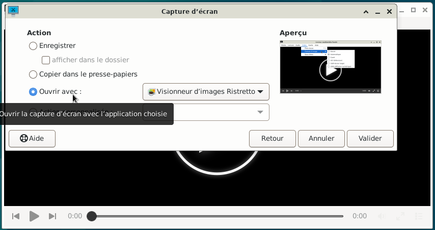
- Si l'application sélectionnée par défaut, dans ce cas Ristretto, ne convient pas :
Simple clic sur le bouton où est inscrit : Visionneur d'images Ristretto.
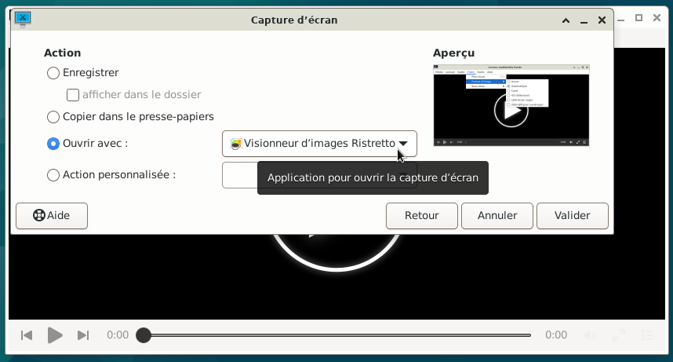
- Une liste déroulante apparaît avec plusieurs choix d'applications
Choisir l'application souhaitée.
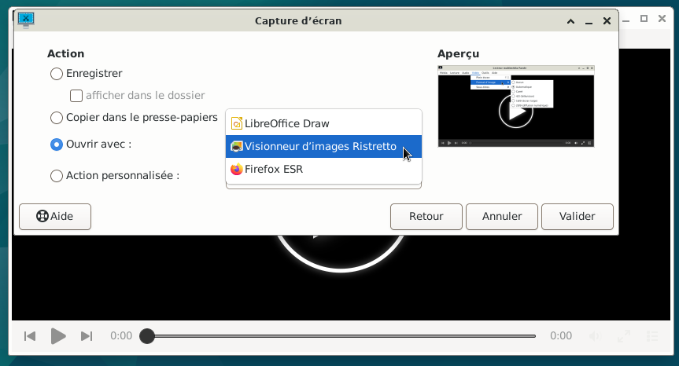
- Dans cet exemple l'application par défaut Ristretto convient.
Ne rien modifier
Simple clic > Valider
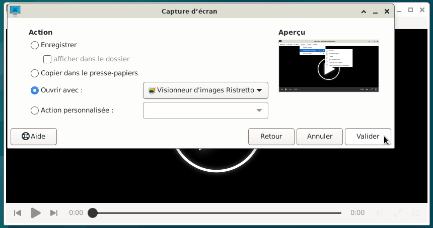
- L'application Visionneur d'images Ristretto s'ouvre avec la capture d'écran.
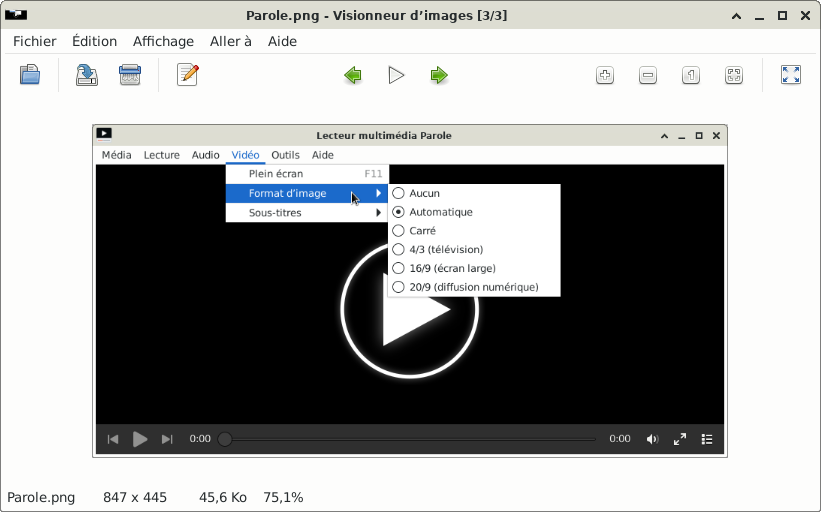
- Si besoin, il est possible d'enregistrer la capture d'écran.
Simple clic > Fichier > Enregistrer une copie...
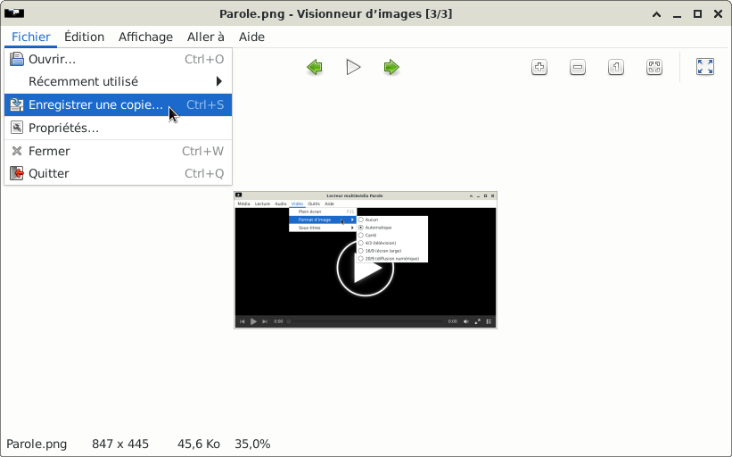
- La fenêtre « Enregistrer une copie » apparaît
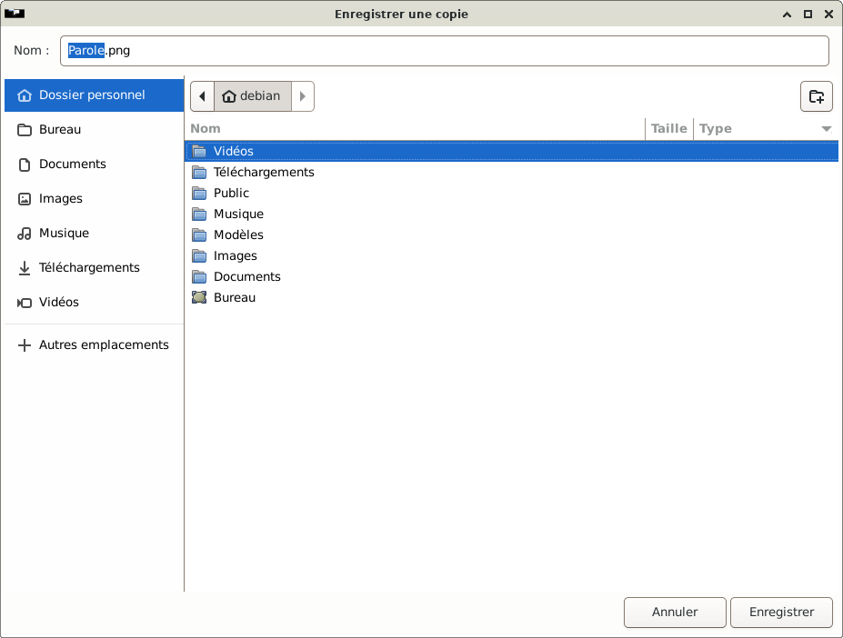
- Enregistrer la capture d'écran au format d'image souhaité avec le nom choisi et dans le dossier désiré.
Exemple : Enregistrer la capture d'écran dans le dossier « Images »
Double clic > Images
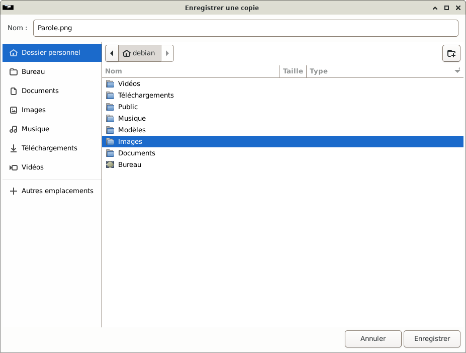
- A l'aide de la souris faire une sélection (qui sera surlignée en bleu) puis saisir le nom du fichier.
Dans cet exemple, le nom qui a été saisi est « Parole »
le « .png » est le format de l'image par défaut (ne pas le sélectionner).
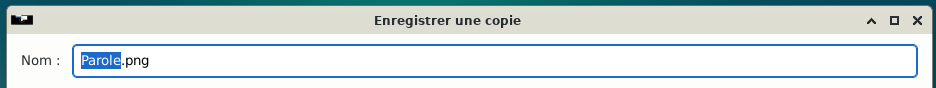
- Simple clic > Enregistrer (en bas à droite de la fenêtre)
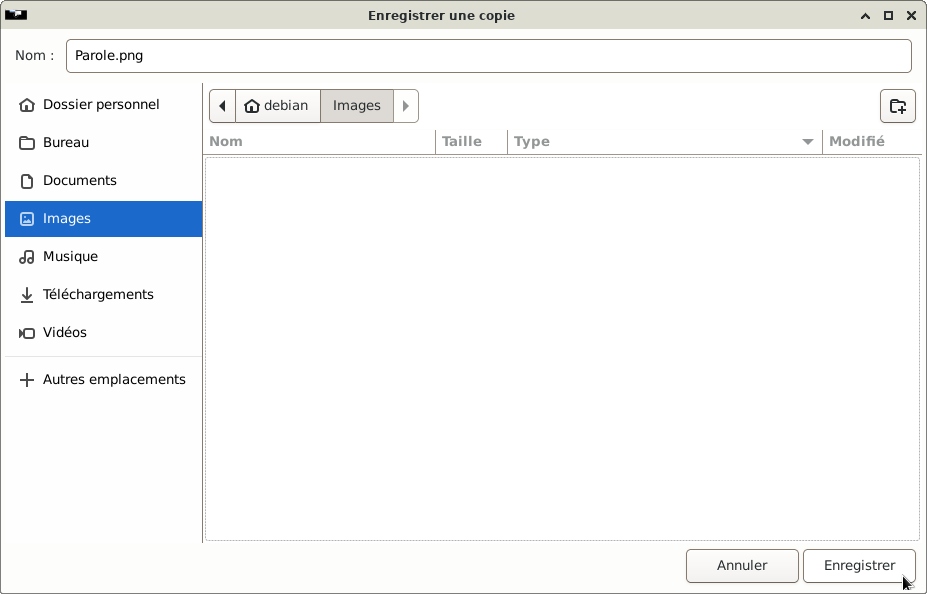
- La fenêtre « Enregistrer une copie » disparaît
- Fermer l'application : Visionneur d'images Ristretto
Simple clic > Fichier > Quitter
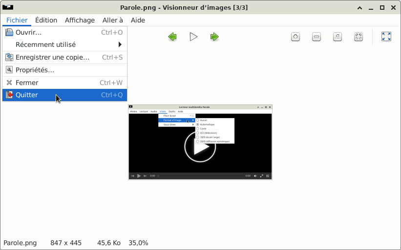
- Si besoin, pour retrouver l'image de la capture d'écran qui se trouve dans le dossier Images
Se rendre au chapitre :
Gestionnaire de fichiers avec Thunar :
Se déplacer dans le gestionnaire de fichiers
Retour au paragraphe précédent

Retour
Informations sur le logiciel libre et
Merci.
Marques déposées :
Ce site ne fait pas partie de Debian, n'est pas produit par le projet
Debian, ni approuvé par le projet Debian.
Ce site n'est pas affilié à Debian. Debian est une marque déposée appartenant
à Software in the Public Interest, Inc.
Contribuer :
Ce site ne fait pas partie de XFCE, n'est pas produit par le projet
XFCE, ni approuvé par le projet XFCE.
Ce site n'est pas affilié à XFCE.
Ce site est juste réalisé par un passionné.